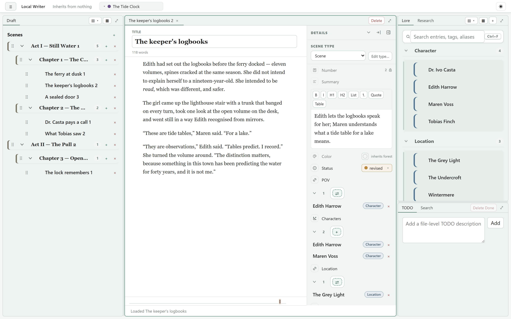
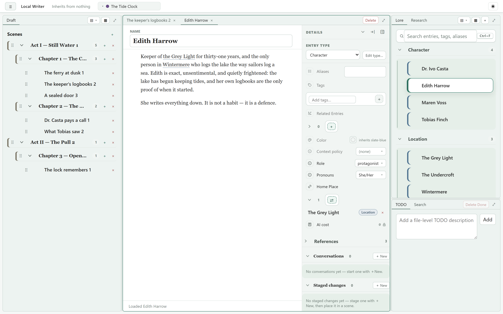
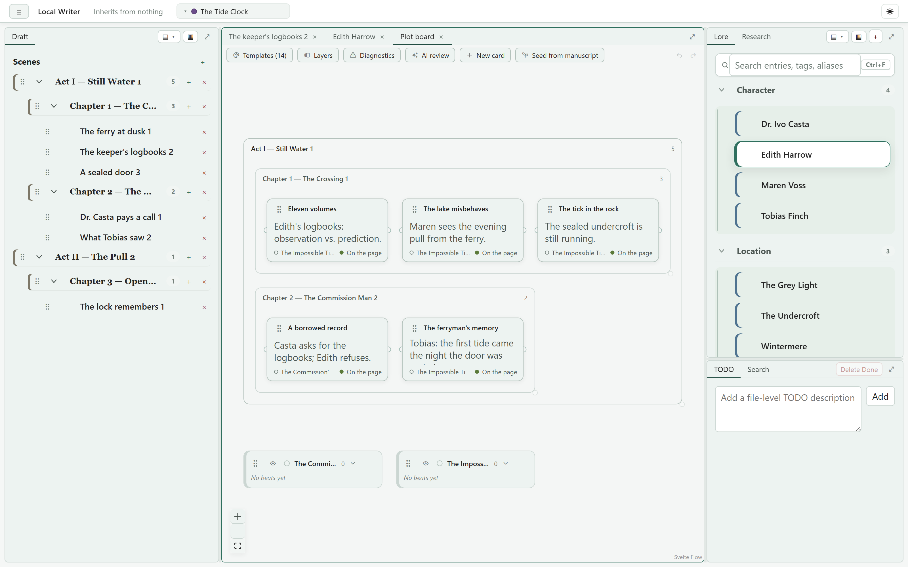

A fiction-writing app that runs entirely on your own machine, stores your work as plain files you can read without it, and treats AI as an optional tool you point at your prose — not a service you rent.
No account. No subscription. No sync. Nothing phones home.
Free and open source (MIT) · Windows, macOS, and Linux

Writing software has drifted into rented access to your own work — stop paying and you're locked out. This is a program you run. If the project were abandoned tomorrow, the copy on your disk keeps working, and the license lets anyone pick it up.
Scenes and lore are Markdown with YAML front matter; structure is a handful of YAML files. You can read, grep, diff, and version-control a project without this app. With a local model via Ollama, even the AI runs with the network switched off.
No "write my novel" button. The model gets context you authored — lore, scenes, outline — through prompts you wrote and can read. You pick the provider and model per task, see the token cost of every call, and the permission model fails closed.
Acts, chapters, and scenes with drag-reordering. Scenes are Markdown files behind a WYSIWYG editor; identity lives in front matter, so renaming files never breaks anything.
Characters, places, and anything else — typed entries with fields, tags, references, and backlinks. Mid-scene mutations let a fact change partway through the story, with a timeline showing the effective state at any point.
Plotlines and cards laid out against the manuscript, so structure is something you can see and rearrange, not just imagine.
Every list is backed by a small set-algebra query — union, intersection, relational nesting over lore links — authored in a drag-and-drop designer, with parameters, grouping, and trees.
Model world / series / book levels purely by folder depth: nearer schema layers override farther ones, and node types, fields, and inheritance are authored in-app.
Anthropic, OpenAI, OpenRouter, or local models via Ollama. Prompts are Jinja2 templates stored as project files; chats are project nodes; per-call token and cost accounting rolls up to a project total.


Everything the app knows about your story lives in files you can open in any editor. Caches are disposable; credentials never enter the project, so a folder is safe to commit or share.
my-novel/ ├─ project.yaml # manifest: title, AI policy, UI preferences ├─ manuscript.structure.yaml # act / chapter / scene ordering ├─ metadata.schema.yaml # this layer's schema contributions ├─ todo.yaml ├─ scenes/ # Markdown + YAML front matter ├─ lore/ ├─ prompts/ # Jinja2 templates, editable in-app ├─ research/ chats/ views/ └─ .cache/ # disposable, always rebuildable